动画 SVG 本身就是图片文件，动画已经封装在里面，浏览器自动播放、无限循环、透明背景，不需要任何 JS/CSS。把文件拷进你网站的静态目录（如 public/、static/、或直接和网页放一起），然后：
<img src="aiinfinite-logo-flow.svg" alt="aiinfinite" style="width: min(520px, 80vw)">

▲ 上面就是真实的 <img> 嵌入效果。宽度由你随意控制，比例自动保持。
三个原因，前两个已解决：① 旧轻量版内嵌图只有 1100px 且压缩较狠，一放大就糊——现主文件已换成 1550px 高质量 AVIF，发丝纹理级清晰；② 如果你是在访达快速预览 / 缩略图里看 svg，那是低清静态预览，不代表真实效果，请以浏览器打开为准；③ 白色/浅色底上整体发淡是发光 logo 的物理特性（半透明光晕融进白底），不是模糊——按下面的投影技巧即可改善。文件大小只有 328 KB，页面加载无压力。
把 SVG 放进 src/assets/，像用图片一样导入即可：
// React 示例 import logoFlow from "./assets/aiinfinite-logo-flow.svg"; <img src={logoFlow} alt="aiinfinite" style={{ width: 520 }} />
.hero {
background-image: url("aiinfinite-logo-flow.svg");
background-repeat: no-repeat;
background-position: center;
background-size: min(520px, 80%);
}
logo 是亮色笔迹，在浅色背景上建议加一层淡淡的深色投影保持对比（一行 CSS）：
<img src="aiinfinite-logo-flow-compact.svg" style="width:520px; filter: drop-shadow(0 4px 14px rgba(20,40,90,.35))">
| 文件 | 大小 | 用途 |
|---|---|---|
aiinfinite-logo-flow.svg | 328 KB | ⭐ 网站嵌入首选：1550px 高清内图，任何尺寸都清晰 |
aiinfinite-logo-flow-compact.svg | 210 KB | 轻量版：只用于小尺寸（≤350px 宽，页脚/导航栏） |
logo-transparent.png | 1.8 MB | 静态透明 logo：打印、OG 分享图、PPT 等 |
logo-transparent-1200.png | 427 KB | 静态透明 logo 网页版（原尺寸 1774×887） |
· 系统开启了"减少动态效果"时，SMIL 动画仍会播放；若需无障碍合规，可用 <picture> + prefers-reduced-motion 媒体查询在弱动效环境下回退到静态 PNG。
· 需要 MP4/WebM 视频版（用于视频号、开场动画）随时说一声，我可以用无头浏览器直接录一版。
· 放在 GitHub Pages / Nginx / OSS 上要配置 MIME 吗？ 不用，.svg 是标准静态资源，所有主流服务器默认支持。
· SEO / 无障碍： 记得写 alt（上面示例已带）。
· 本机双击 svg 文件会用浏览器直接打开，动画照常播放（个别浏览器内置预览器不支持 SMIL，如 macOS 快速预览，属正常，以浏览器为准）。